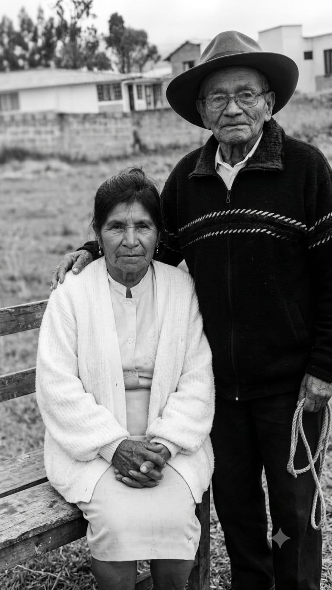
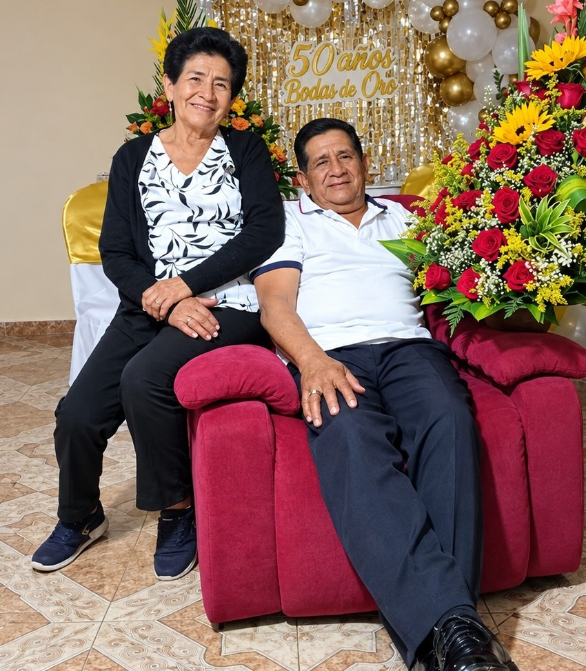
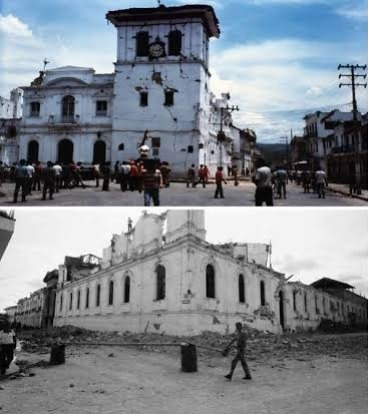
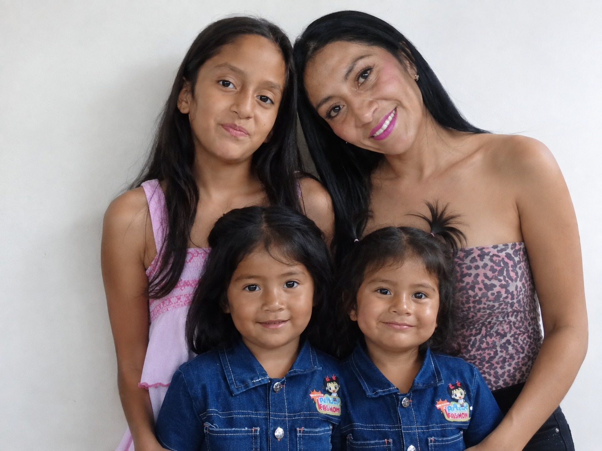
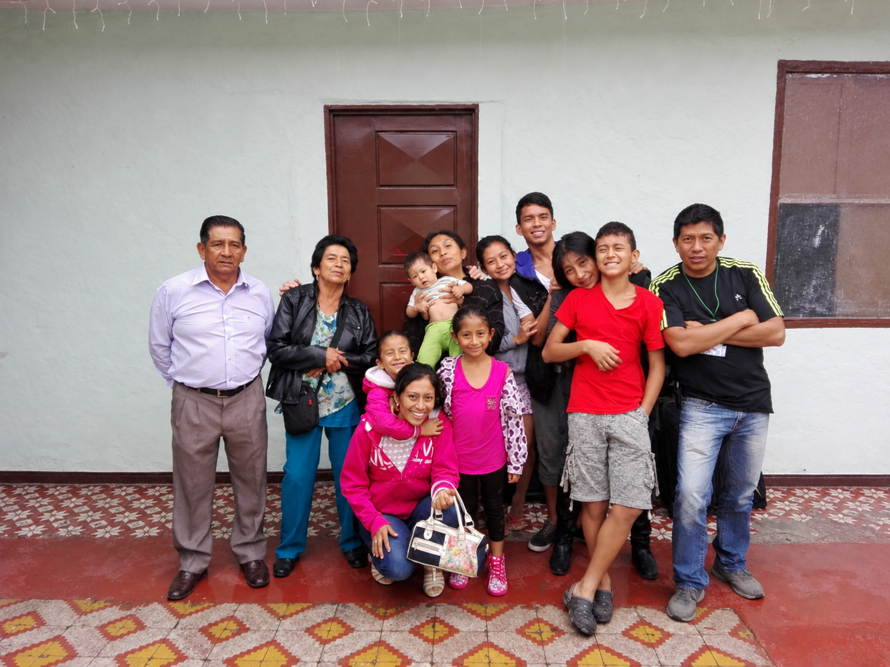

TRES GENERACIONES, UNA MISMA PASIÓN ❤️🌱
Hay historias que comienzan con una idea… La nuestra comenzó con una semilla. 🌱☕
Tradición González nace en el corazón del departamento del Cauca, en el municipio de Popayán, en la Finca El Ciprés, ubicada en la vereda Julumito, a 1.760 metros sobre el nivel del mar.
En estas tierras de clima templado cultivamos café de variedad Castillo, especie Arábica, reconocido por sus características especiales: cuerpo medio, acidez cítrica brillante y dulces notas que recuerdan la panela y el chocolate.
Pero detrás de cada taza hay mucho más que café…

Nuestra historia se remonta al año 1945, cuando Ismael González y Leonor Vitonco formaron una humilde familia campesina.
Con esfuerzo, dedicación y amor por la tierra, se dedicaron a la siembra, cosecha, poscosecha y comercialización de café pergamino seco. Además, del cultivo de otros productos agrícolas.
Ellos, fueron la semilla de esta gran historia.
Sin imaginarlo, estaban construyendo las bases de un legado, que con el paso del tiempo, crecería y daría vida a lo que hoy conocemos como:
TRADICIÓN GONZÁLEZ ☕🌱

La herencia fue recibida por sus hijos, quienes decidieron conservar y continuar las actividades de sus padres.
Entre ellos, José María González y su esposa María Agustina Ruiz, mis padres, quienes conforman la segunda, generación de esta historia.
En sus inicios, se trasladaron a la ciudad y trabajaron como empleados dependientes. Con disciplina y sacrificio lograron ahorrar hasta adquirir su primer lote en la zona rural de Popayán.
Y así, una vez más, la tierra volvió a llamarlos…
Retomaron el legado familiar, y continuaron con la siembra, cosecha y comercialización de café pergamino seco, además, de otros productos agrícolas.

En 1983, el terremoto que destruyó gran parte de Popayán cambió para siempre el rumbo de nuestra familia.
En medio del caos, la incertidumbre y el miedo, tuvieron que refugiarse en cambuches en la zona rural. Tiempo después construyeron una sencilla casa de guadua.
Y ocurrió algo inesperado…
Ya no quisieron regresar a la ciudad.
Decidieron quedarse en el campo, seguir cultivando café y construir allí su futuro.
Don Jose junto a sus hermanos adquirieron otros lotes y cultivaron miles de semillas de café.
El campo, dejó de ser solamente un lugar donde vivían.
Se convirtió en su vida. ❤️
Entre los años 2008 y 2010, los cultivos fueron afectados drásticamente por enfermedades.
Fue una noticia devastadora, para miles de caficultores del país.
Pero, nuestra familia no se rindió.
Decidieron renovar completamente los cultivos con variedades más resistentes.
Con el acompañamiento de la Federación Nacional de Cafeteros y sus ingenieros agrónomos, adoptaron nuevas técnicas para el lavado, secado y almacenamiento del café.
El resultado, fue un café de gran calidad, catalogado con un puntaje de 85%, considerado un café excelente.
"Las dificultades pueden destruir un cultivo… pero nunca deben destruir una tradición."

En abril de 2026, la historia dio un nuevo giro.
Como consecuencia, de una situación que me llevó a buscar nuevos caminos y una fuente adicional de ingresos, decidí retomar el legado que durante generaciones había permanecido en nuestra familia.
Soy Mile González, madre cabeza de hogar y parte de la tercera generación de esta historia.
Y decidí llevar la tradición familiar, un paso más adelante:
No solo cultivar café… sino llevar nuestra historia directamente hasta tu taza. ☕

Así nace, esta nueva etapa de Tradición González, con la comercialización de café tostado en grano y molido.
Nuestro café, es procesado de manera artesanal y pasa por una tostión media alta, un punto de tueste intermedio-oscuro que busca un equilibrio especial entre la intensidad del tueste y la dulzura natural del café.
Ofrecemos una molienda media, que permite extraer de manera equilibrada sus aromas, sabores y características especiales.
Cada empaque que llega a tus manos representa más de 80 años de historia familiar.
Representa a nuestros abuelos trabajando la tierra.
Representa a nuestros padres reconstruyendo su vida después de un terremoto.
Representa cultivos perdidos, nuevas siembras y la fuerza para comenzar de nuevo.
Y representa una tercera generación que decidió que este legado no debía quedarse únicamente en la finca…
Debía llegar hasta tu taza. ☕❤️
Tradición González no es solo café.
Es familia.
Es tierra.
Es esfuerzo.
Es resilencia.
Es amor por el campo.
Es el trabajo de tres generaciones.
🌱 Desde la Finca El Ciprés, en la vereda Julumito, Popayán, Cauca, a 1.760 m s. n. m., llevamos hasta ti una tradición que ha pasado de generación en generación.
Porque en cada taza de café hay una historia.
Y nuestra historia se llama…
☕ TRADICIÓN GONZÁLEZ ❤️🌱